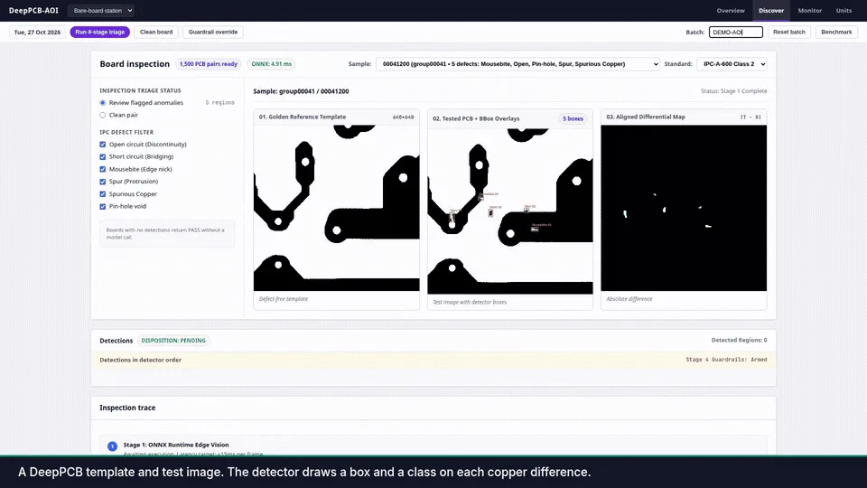
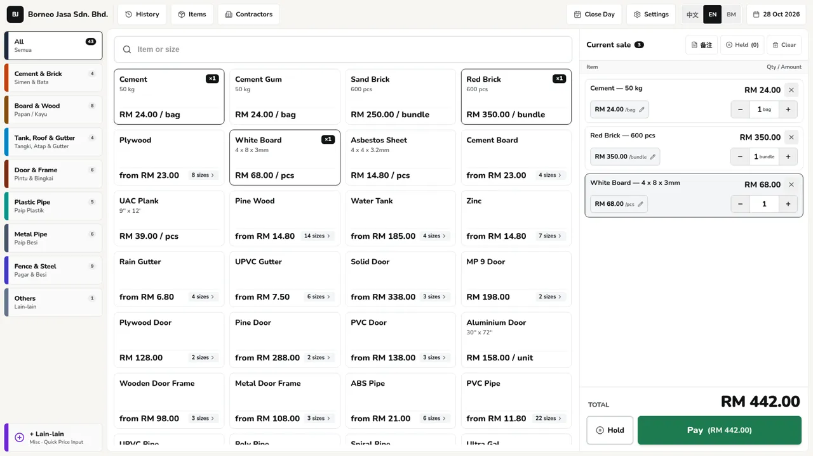
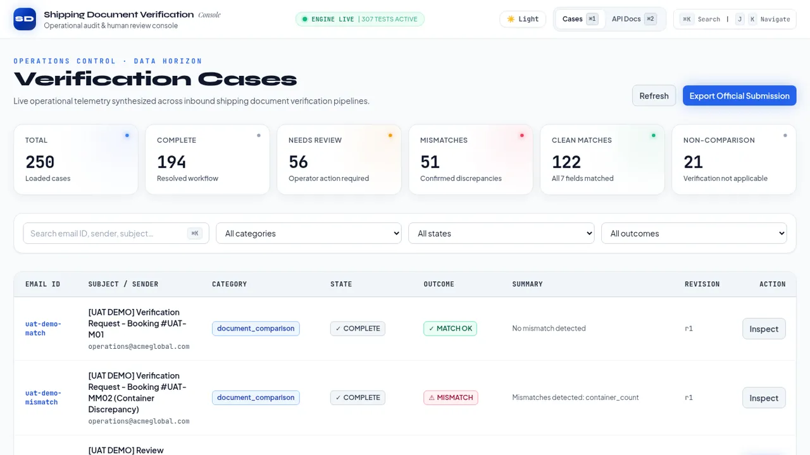

DeepPCB-AOI
Personal project
Finds six kinds of copper defect on bare PCBs (0.94 F1 on the 500-pair DeepPCB test set with a 3-channel YOLOv8n) and decides pass, rework or scrap, with the reason attached.
Read the case studyComputer vision & applied AI engineer
I'm Gwenfred Tham, a Computer Science (AI) graduate from APU in Kuala Lumpur. I build computer vision and applied AI systems for real problems, from PCB inspection on a factory line to the till at a real hardware store.
I care most about the parts that keep a system honest: rules that a model cannot overrule, data that stays correct without a network, and tests that pin the behaviour down.

Personal project
Finds six kinds of copper defect on bare PCBs (0.94 F1 on the 500-pair DeepPCB test set with a 3-channel YOLOv8n) and decides pass, rework or scrap, with the reason attached.
Read the case study
Client project · rollout Nov 2026
Moves a hardware store in Keningau, Sabah off paper books with an offline till that tracks stock as it sells and reconciles the cash drawer at close.
Read the case study
Hackathon project
Checks a Shipping Instruction against the draft Bill of Lading field by field and sends anything unclear to a reviewer.
Read the case studyUpdated Oct 2026
The fastest way to reach me is email: gwenfredtham@gmail.com.